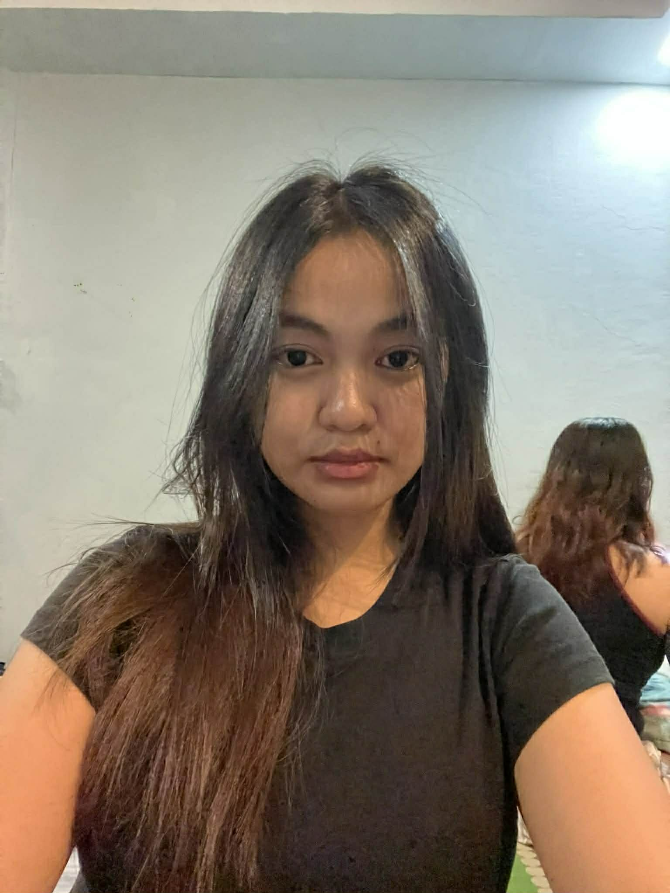
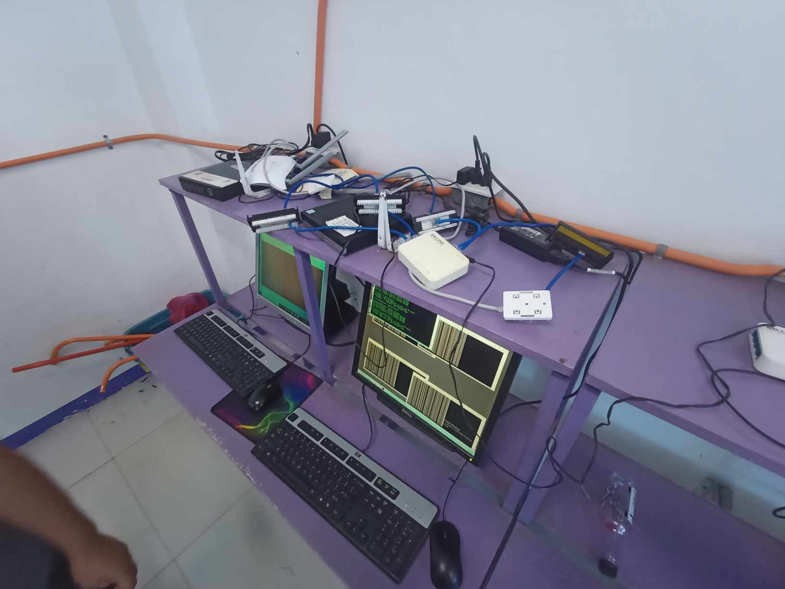
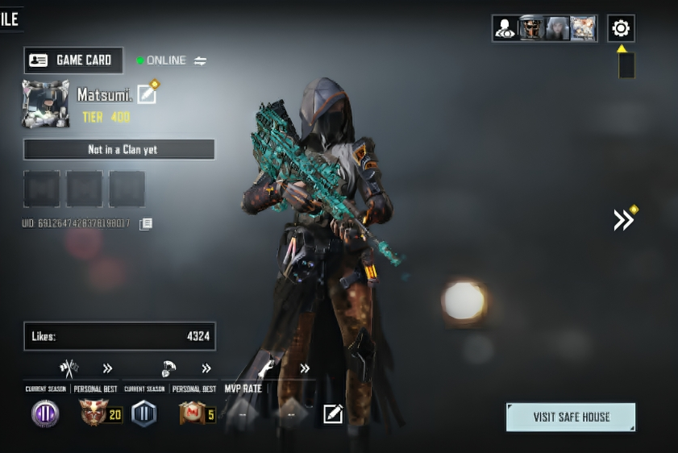
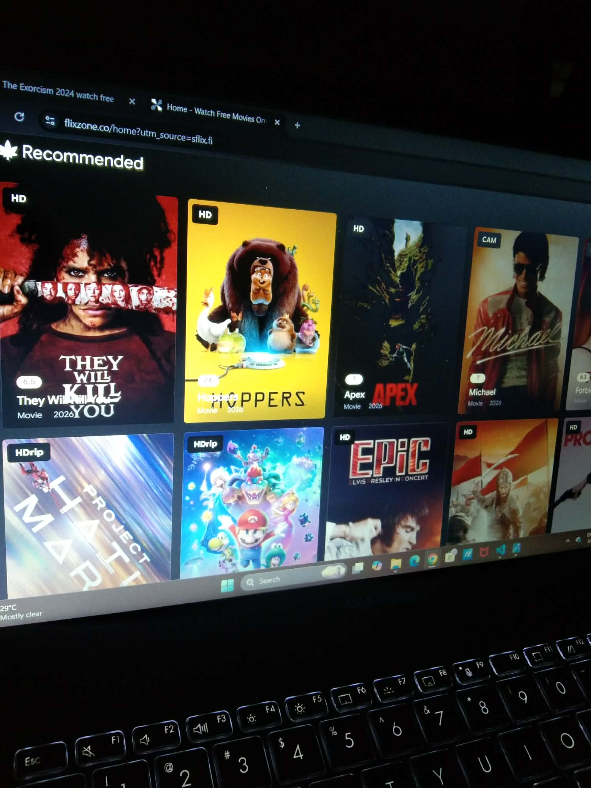
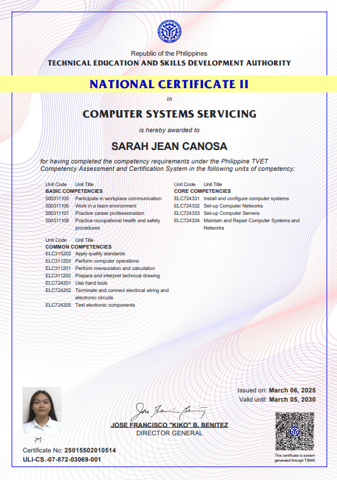

Sarah Jean Canosa
1st Year at Universidad de Dagupan. Passionate about technology, determined to master troubleshooting and secure networks.
About Me
Background
I'm Sarah Jean Canosa and I am currently a 1st Year student at Universidad de Dagupan, pursuing Bachelor of Science in Information Technology (BSIT), majoring in Network Infrastructure with Cybersecurity.
Goal
My goal is to finish my studies and successfully overcome all challenges and obstacles that come my way.
My Story
My journey has taught me that hard work and determination are the keys to success. Despite facing difficulties, I remain focused on my dreams because I believe that every challenge is an opportunity to become stronger and better.
Skills

Computer System Servicing (CSS) Hardware & Software Installation
Hardware & Software Installation
 Basic Network Configuration
Basic Network Configuration
Soft Skills
Interest
Hobbies

Playing CODM
Watching Movies/SeriesExperience

National Certificate II in Computer System Servicing (NCII)
COMPUTER SYSTEMS SERVICES NATIONAL CERTIFICATE
Received formal training and certification in computer hardware, software installation, and basic network setup.